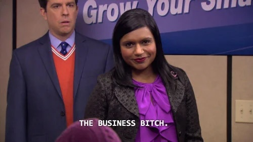

francheska_os v1.0
PRESS SPACE TO POWER ON
or click anywhere_
“I make the boring and technical interesting for people.”
Strategy & Market Intelligence Analyst
FRANCHESKA GUERRERO has always been the connector. Give her something complicated and she'll figure out what's really being asked, then explain it so people can make a clear call.
That curiosity doesn't stay in one lane. She's run a half-marathon, trains Brazilian Jiu-Jitsu, rides horses, and is building a cyberdeck from scratch.
Lately it's pointed at the business of media: how streaming deals get made, how creators turn into consumer brands, what Apple is actually getting out of MLS, and whether equestrian could have its F1 moment. She's looking for a full-time strategy or market intelligence role where she can do that work for real.

How I turn messy problems into clear decisions, across campaigns, crisis response, and policy analysis.
How each project splits between strategy and data work, and between qualitative and quantitative methods.
I am looking for my next full-time role in data, strategy, or intelligence work. If that overlaps with what you are hiring for, I would like to hear from you.
Email me →Click "new fortune" for a bit of nonsense.
☕ A little Diner Dash-style coffee shop I built myself. Make drinks, warm pastries, and keep the customers happy.
On your phone: tap Share, then Add to Home Screen, and it plays like an app.
Play Lox Café →